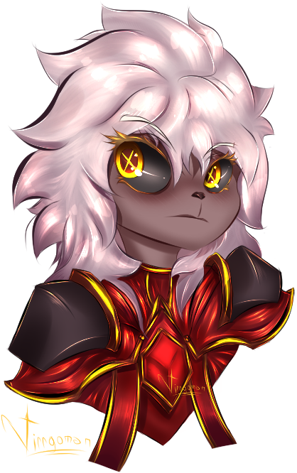

Kaotis
 |
Descrición: |
Los duelistas maestros. |
Especializados en utilizar la magia más temida en toda la infinita creación, la magia del caos. |
Estos seres de poder inimaginable comprenden mejor que nadie que son anomalías dentro de los mismos kaotis, pues el termino Kjukser, viene a ser una referencia a que son malnacidos del caos, capaces de comprender y razonar a una velocidad más humana y menos tardía, como así lo fue Katharnidios en su momento, que tuvo que pasar muchísimos años para que esta comprendiera la situación y razona finalmente cobrando coherencia y criterio. |
Gracias a todo esto mencionado, Katharnidios les deja el libre paso a salir de la dimensión del caos a todos los Kaotis’ Kjukser(Defectuosos), pues estos no suponen una amenaza para nadie y al contrario, siempre vienen a realizar grandes hazañas desde las sombras, o incluso dar una mano en momentos lúgubres, por increíble que parezca parece ser todo un plan maestro orquestado por seres supremos que buscan hacer del caos algo menos temible y más honrado. |
No obstante el miedo a la época del caos, los Kaotis y en general todo lo referido a ellos, incluyendo su deidad ,Katharnidios, siguen siendo muy fervientes y poco ignorable, pues los kaotis deberán ganarse el respeto y la confianza de todo el mundo que se atreva a habitar. |
Estilo: KAOTIS |
Atributos: 🎲🀄🎲. |
Dificultad: ⭐⭐⭐⭐⭐⭐ |
Dificultad de rol: ⭐⭐⭐ |
Requisito de prueba: MAESTRO |
Estadísticas de Kaotis: |
35’ pies base. |
+2 DES |
+3 SAB |
-5 CAR |
+Infinita Agilidad. |
+2 Letalidad. |
+2 Juego de manos por nivel. |
+3 de regeneración de vida por nivel. |
Generas 2 de estrés a toda la party. |
Posees 4 brazos que te permitirán hacer cosas con más facilidad. |
No puedes utilizar equipamiento de ningún tipo. |
Dado de daños |
Dado de golpe = 0d0 + 9 por nivel. |
Habilidades pasivas: |
☸Hijo de Katharnidios☸: |
Esta pasiva potencia drásticamente el daño de todas tus fuentes que involucran caos. |
Empieza con una base de SAB. |
Cada sesión adquiere ☸+2☸ de este beneficio. |
Si llegas a 30 de Estrés deberás tirar 1d20 como el resto, pero si sale negativo o inferior a 19 el dm controlara tu Kaotis para mal, si sale un 20, lo hará para bien. |
El kaotis y sus invocaciones no poseen daño crítico pero tampoco pifia. |
Los kaotis poseen ventajas a la hora de hacer música. |
MANO: |
Cada que inicia el Asalto el Kaotis roba 4 🎴cartas🎴. |
El primer turno inicia con 2 🎴cartas🎴 extras. |
Máx. cantidad de 🎴cartas🎴 posibles: 10 en tu mano. |
MAZO/Deck: |
Son las 🎴cartas🎴 que puedes robar para poner en tu mano. |
El mazo lo podrás cambiar diariamente por lo que te guste a libre elección. |
Tienes un slot de 8 🎴cartas🎴. |
Puedes sacrificar 1 🎴carta🎴 para hacer aparecer 1 Esbirro del caos a 25’ pies. |
Límite de monstruos: |
Slots = 5. |
📜Lista de monstruos📜 |
Esbirro del caos: |
Estadisticas de la invocación: |
PG: 3 por nivel + 3 por sesión. |
CA: 10 + 3 por nivel. |
Pies: 50’ pies. |
Habilidades de la invocación: |
Disparo caótico: (E) |
Dispara a un enemigo a lo largo de 60'. (E) |
Niveles: |
Nivel 1 = 1 Slots. |
SA: +3/6/9/12/15 |
Nivel 2 = 2 Slots. |
SA: +6/9/12/15/20 |
Añade +1 Terror a los enemigos. |
Nivel 3 = 3 Slots. |
SA: +9/12/15/20/33 |
Añade +3 al estrés global. |
Añade +3 Terror a los enemigos. |
Tenebris joven: |
Estadisticas de la Invocación: |
PG: 10 por nivel + 6 por sesión. |
CA: 10 + 3 por nivel |
Pies: 60’/70’/90’/120’/150’ pies. |
Habilidades de la invocación: |
⚔️Corte del caos⚔️ (E) |
Da un poderoso corte que puede convertirse en un corte en área de 5' de distancia o una embestida a un único enemigo la cual le permite mover al enemigo. |
Puede moverse fuera de su turno y realizar este ataque. |
Puede empujar a los enemigos contra los que choca. máx 25’ pies verdaderos. |
🛡️Custodio del caos🛡️ (R) |
Como reacción puedes lanzar esta habilidad. |
El Tenebris se teletransporta y cubrirá a su dueño del ataque mencionado aplicando su daño de invocación como reducción de daño. (R) |
Omen’ Sauren joven: |
Estadisticas de la invocación: |
PG: 10 por nivel + 6 por sesión. |
CA: 10 + 3 por nivel. |
Pies: 60’/70’/90’/120’/150’ pies. |
Habilidades de la invocación: |
🔥Llamarada del caos🔥 (E/B) |
Arrasa a los enemigos con una poderosa carga caótica que los quemara vivos.75' de alcance. |
Puede aplicarse en un área de 5’x5' pies. |
🎇Orbe caótico🎇 (E) |
Crea una zona caótica. Al volver a ser tu turno aplica el daño 2 veces. |
Alcance de aura 10’. |
Puede acumularse con otros 🎇Orbe caótico🎇. |
75’ Alcance máx. |
Nefaliuz: |
Estadisticas de la invocación |
PG: 10 por nivel + 6 por sesión. |
CA: 10 + 3 por nivel. |
Pies: 60’/70’/90’/120’/150’ pies. |
Habilidades de la invocación: |
🗡️Espada oscura🗡️ (E/B) |
Da un corte a un único objetivo. |
👁️Anochecer👁️ (E) |
Crea una copia a lo largo de 45’ verdaderos. |
Al iniciar tu turno traza una línea verdadera y atraviesa a todos los enemigos/aliados. |
Los objetivos atravesados sufren el daño 2 veces. |
Tenebris: |
estadisticas de la invocacion: |
🔪Espadón de Tenebris🔪 (E/B) |
Da un poderoso corte que puede convertirse en un corte en área de 5' de distancia o una embestida a un único enemigo la cual le permite mover al enemigo. |
Puede moverse fuera de su turno y realizar este ataque. |
Puede empujar a los enemigos contra los que choca. máx 45’ pies verdaderos. |
☄️Acometida abismal☄️ (E) |
Crea una copia a lo largo de 90’ verdaderos. |
Al iniciar tu turno traza una línea verdadera y atraviesa a todos los enemigos/aliados. |
Los objetivos atravesados sufren el daño 3 veces. |
🛡️Gesto del caballero🛡️ (R) |
El tenebris se teleporta a donde se encuentra su dueño y lo cubre del ataque con su cuerpo. |
Omen’ Sauren: |
Estadisticas de la invocación |
PG: 30 por nivel + 6 por sesión. |
CA: 10 + 3 por nivel. |
Pies: 75’/90’/115’/145’/175’ pies. |
Habilidades de la invocación: |
☸Pilar del caos☸ (E/B) |
Puede lanzar un pilar del caos sobre un enemigo a elección. |
🛡️Protección🛡️ (R) |
Cuando vas a recibir un golpe, el Omen'Sauren protegerá al kaotis con su voluntad reduciendo el daño en función de su -Hijo de Katharnidios-El enemigo que te ataco recibe un golpe del heraldo y es empujado 6 casillas. |
🎇👁️🩸Ojo de Katharnidios🩸👁️🎇 (E) |
Crea una zona caótica. Al volver a ser tu turno aplica el daño 3 veces. |
Alcance de aura 15’. |
Puede acumularse con otros 🎇Orbe caótico🎇. |
75’ Alcance máx. |
Tipos de Decks base: |
Deck del Caos: |
El deck del caos se puede utilizar fuera de combate pero consumirá 1 acción de solo rol. |
Solo y únicamente no se consume ninguna acción si ya cumples con los requisitos para la preparación. |
Ten en consideración que mantener criaturas del caos de manera constante fuera de combate requiere mucho poder. |
Solo puedes lanzar 3 veces el mismo tipo de carta sobre un enemigo en caso de que esta no sea especificada. |
1.Deck del invocador |
Existen varios tipos de invocaciones. |
Las invocaciones normales tienen sus propias acciones y capacidades de atacar. |
Las invocaciones ⚖️Catalizador⚖️. |
Poseen la capacidad de acomodarse al usuario o a sus criaturas. |
Estos Catalizadores buscan darle capacidades únicas a aquellos que las portan. |
Poseen mecánicas únicas no consumen el slot de invocación, pero en su lugar sólo puedes tener hasta un máximo de 1 en el campo de batalla. |
a. Dúo del caos: |
Invoca 2 -esbirro del caos- a 25’ de su lanzador. |
Solo puede lanzarse 1 vez por turno. |
b. Sacrificio insano: |
Sacrificas a una de tus criaturas del caos para que ascienda de nivel. |
Solo puede lanzarse 1 vez por turno. |
c. Criatura poderosa: |
Convocas una criatura de nivel 2 a elección. |
Solo puede lanzarse 1 vez por turno. |
Requisito: 2 🎴cartas🎴. |
2. Deck de Guerra: |
Las Habilidades de este Deck Están conformadas por habilidades únicas que se centran en el combate a melee. |
a. Espada del caos: |
Realiza un ataque bastante poderoso que puede aplicarse alrededor de 5’ pies del lanzador. La espada destruye 2 de 🛡️Armadura🛡️ por nivel. |
b. Guadaña Segadora: |
Sacas una guadaña del caos con la cual puedes realizar un corte hacia delante de ti que puede alargarse hasta 6 casillas en línea recta, puedes cambiar el ataque por uno en un área de 5’ pies. |
c. Impulso del caos: |
Puedes desplazarte 30’ a la par que anulas todos los ataques de oportunidad. Generas una pequeña explosión de caos que te permite moverte a gran velocidad incrementando añadiendo 5 niveles de inercia. (No acumulable) |
d. Despliegue de garras caóticas: |
Hundes tu mano en el piso y salen unas zarpas afiladas repletas de un fuego maldito que lanzas contra los enemigos que se encuentren hasta 30’ pies de distancia. |
Las garras poseen un diámetro de 3 casillas. (Solo se puede utilizar de manera lineal) |
e. Ultra inercia del caos: |
Puedes empujar a un enemigo a 10’, puedes moverte 10’ cada vez que la utilizas. |
Añade +3 niveles de inercia. Esta carta no aplica daño. |
f. Patada del caos: |
Te teletransportas hacia un enemigo a 30’ pies y le das una patada que empuja al enemigo en 4 casillas. |
g. Golpe del caos: |
Lanza un golpe que inflige daño verdadero a un enemigo a 5’. |
(Máx. 1 vez por turno) |
h. Susano: |
Recreas una coraza de caos ósea. |
Adquieres +2 a la 🛡️Armadura🛡️ por nivel. |
Puede aplicarse sobre ti o sobre un aliado. |
En caso de hacerlo sobre un aliado se romperá al primer impacto. |
Deck Defensa: |
Las Habilidades de este Deck Están conformadas por habilidades únicas que se centran en proteger a su lanzador, tanto ya sea de manera ofensiva, pasiva o incluso por medios más complejos. |
a. Contra: |
Cuando recibes un ataque, puedes activar esta carta para reflejar el daño a tu atacante y evitar dicho daño. |
(Solo rebota el daño/efecto sobre el enemigo, más no deniega la acción como tal) |
Solo puede utilizarse una vez por turno. |
b. Negación: |
Niega cualquier efecto o acción, no funciona, canalización o cambio de fase. |
Solo puede utilizarse una vez por turno. |
c. Detención temporal: |
Frena el tiempo de una criatura o incluso el propio, este efecto dura todo el asalto y nada ni nadie puede curar o hacerle daño al objetivo afectado, puede lanzarlo sobre uno mismo o contra un enemigo a lo largo de 40’. |
(No se puede lanzar contra jefes) Solo puede detener el tiempo de 1 criatura al mismo tiempo, esto incluye al propio kaotis. |
Cuando empieza el turno de la criatura este efecto se pierde. |
Solo puede usarse una vez cada 2 turnos. (Un turno si, un turno no) |
d. Revolú: |
Incrementa toda tu CA en 2 puntos por nivel hasta el próximo asalto. |
En caso de recibir daño, pierdes el efecto de la carta más no recibes el daño. |
Solo puede usarse 1 vez por turno. |
El efecto desaparece de manera automática luego de 2 intentos de golpearte. |
f. Pesadilla inaudita: |
Te permite agarrar a los enemigos a 10’pies y lanzarlo otros 10’ pies a donde tú quieras. |
Esta carta solo puede ser usada una vez por turno. |
Si se usa en medio de un ataque que se está recibiendo, ignorarás dicho daño volviéndote intangible a dicho ataque. |
Esta carta no inflige daño. |
Solo puede utilizarse una vez por turno. |
+1 al Terror. |
g. Desaparición total: |
Te vuelves invisible hasta efectuar un ataque, (Tus invocaciones también te quitan la invisibilidad si es que atacan). |
Consume 2 🎴cartas🎴. |
Habilidad letal. |
💥Deck Destrucción💥: |
Las Habilidades de este Deck Están conformadas por habilidades únicas que se centran en explotar al enemigo por medio de los elementos, el caos y todo tipo de magia con tal de hacerlos añicos. |
a. Carta elemental: |
Lanzas una carta elemental que explota a lo largo de un cubo de 5’ pies. |
Puedes escoger el elemento de esta carta. |
Aplica el efecto de dicho elemento en Niv. 3. |
(Máx 2 veces) |
b. Pilar del caos: |
Desde los pies del objetivo empezaran a salir una llama carmesí junto con Atrapa pesadillas del caos que rodearán la zona para luego explotar tomando forma de pilar. |
c. Pilar del caos superior: |
Convoca un pilar mucho más poderoso que puede hacer daño en área de 5’x5’ e inflige 6 de daño por nivel.
|
Consume 2 🎴cartas🎴. |
d. Golpe de pilar: |
Esta carta inflige 3 de daño por nivel y posee un alcance de hasta 45’ pies y se comporta idénticamente a como lo hace -Pilar del más allá de los tiempos-. |
Con la diferencia de que sólo mide una casilla de ancho y solo se puede lanzar desde las manos. |
e. Pilar del más allá de los tiempos: |
Aplica un poderoso pilar que inflige 25 de daño por nivel y puede manifestarse a libre elección a 5’x5’ pies, o puedes hacerlo mono objetivo. |
Puede lanzarse desde las manos pero tendrá otro formato
(Convocas un portal repleto de caos el cual genera muchos jeroglíficos de todo tipo e idiomas, la llama maldita del caos se empieza a hacer presente frente de ti para luego lanzar un poderoso pilar del caos desde tus propias manos. |
Lanzas un pilar de 3 casillas horizontales hacia delante de ti, recorre un total de 120 de rango.) |
Consume 4 🎴cartas🎴. |
-Aberración- da estrés a todos los jugadores. |
+2 Terror. |
f. Meteoro titan: |
Este meteoro realiza daño en área de 3x3 y reducirá la CA de los afectados en 3 puntos por nivel. |
-Aberración- de estrés a todos los jugadores. |
Consume 2 🎴cartas🎴. |
🃏DECK CONTROL🃏: |
Las Habilidades de este Deck Están conformadas por habilidades únicas que se centran en controlar reducir al enemigo por medio de mecánicas más complejas que solo hacer daño directo. |
Falla temporal: |
Puedes cambiar de posición con un enemigo a elección a lo largo de 60’ pies.(Solo una vez por turno) |
Asesinar esperanza: |
Al seleccionar a un enemigo con esta carta, invadiras su mente permitiéndole ver una pequeña parte de lo que tu vez, mostrándole un Last Shadow esperando en una tumba con su nombre escrito mientras lo ve fijamente. |
Reduce la precisión del enemigo en 3 temporalmente. Incrementa el estrés del enemigo drásticamente con un +3. |
Añade +2 al Terror |
Solo puede utilizarse una vez por turno. |
Enloquecer: |
Añades locura sobre la criatura seleccionada. |
Debe superar una salvación con su Caract. de WIS/CON/INT/CAR contra tu Caracteristica de WIS. |
Si logras afectar aplicas +1 al Terror
Si el enemigo falla, su siguiente acción estándar puede ser controlada por ti. |
Solo puede utilizarse una vez por turno. |
Destierro del caos: |
Destierras la mente del objetivo al reino del caos solo por unos segundos, esto aplica 💫Contusión💫 nivel 6. |
+3 Terror. |
Solo puede utilizarse una vez por turno. |
Copia explosiva: |
Creas un clon que inflige daño(Puedes lanzar las 🎴cartas🎴 desde tu clon)(Tus 🎴cartas🎴 no se duplican, sólo que ahora puedes lanzarlas desde tu clon). |
Explotará en un área de 5’x5’ Cuando tú con una simple declaración así lo desees. |
Solo puedes tener 2 clones y es importante aclarar que hacen daño a aliados. |
Puedes lanzar tus 🎴cartas🎴 desde tu clon. |
Antes de recibir un ataque puedes cambiar de posición con un clon. (Este efecto solo puede hacerse una vez por asalto) |
Trampa explosiva: |
Creas una trampa explosiva, cualquier individuo que empiece, termine su turno o toque el área hará explotar la trampa. |
Esta trampa posee un rango de 5’. |
No inflige daño al usuario. |
(Puedes tener cuantas trampas quieras, pero no puedes poner una encima de la otra) |
Malicia del caos: |
Maldices a un enemigo de manera temporal para que su siguiente acción sea cual sea tenga pifia, por más que este sea invulnerables a las mismas. |
(Solo una vez por enemigo) |
Pisar la muerte: |
Maldices al enemigo para que reciba 1 de daño no reducible por nivel por cada 5’pies de movimiento que realice, tanto corriendo, moviéndose o saltando, no cuenta teletransportaciones. |
Solo dura un turno, se puede acumular hasta 2 veces. |
(Solo funciona cuando el enemigo se mueve) (No aplica el daño de Hijo de katharnidios) |
Pesadilla maldita: |
Selecciona a un enemigo para subir su estrés en de forma directa, para que esto suceda tu SAB debe superar la SAB del enemigo en una salvación. |
Todos los miembros de la party sufren un +3 al estrés. |
+6 al Terror. |
Solo puede utilizarse una vez por turno. |
Ópera de la muerte: |
Haz un cántico que repugne hasta la mismísima muerte e inflige tu caos como daño verdadero de forma directa a todos los objetivos en un área de 5x5. |
Incrementa la 🎯precisión🎯 a la hora de golpear a los enemigos marcados en 3 puntos. |
Puedes sacrificar otra carta para manifestar el cántico de forma global pero los aliados sufrirán 2 de estrés verdadero y el daño del cántico desaparecerá. |
Esta carta solo puede ser utilizada 1 vez por turno. |
+3 al Terror. |
☸FAMILIAS DE MONSTRUOS☸ |
Los monstruos del caos se dividen en 👪FAMILIAS👪, cada una de ellas posee una historia, un poder y un enfoque distinto. |
Cada una tiene su propio modo de juego y mecánicas. |
Solo puedes portar el poder de una 👪FAMILIA👪, así que asegúrate de escoger sabiamente. |
Cada 👪FAMILIAS👪, viene con un deck propio el cual estás obligado a poner TODAS sus 🎴. |
Las invocaciones de las siguientes familias siempre aplican 1 de estrés verdadero a todos los integrantes del grupo menos al usuario que las invoque.
🧧⚖️🧧LA CORTE CARMESÍ🧧⚖️🧧
👇⚖️👈☝️👉LOS CODICIOSOS DEL DORADO👈☝️👉⚖️👇 |
👪FAMILIAS👪: |
🔻REDBRISS🔻 |
Red briss: Caballeros de Caótica armadura que siempre y cuando demuestres tu devoción, te cubrirán de una manera agresiva. |
🀄Efecto🀄 |
Cuando tus invocaciones reciben un ataque adquieres +1 ⚜️Honor de caballero⚜️. |
Puedes sacrificar los puntos de ⚜️Honor de caballero⚜️ para adquirir efectos únicos. |
1 ⚜️ → Lanza un ☸Ataque caótico☸ al enemigo. |
(Máx. 3 veces por turno) |
2 ⚜️ → Manifiesta un Bloqueo con ☸Ataque caótico☸ sobre un aliado. |
Deja a la invocación a 5’ pies del aliado. |
(Máx. 1 vez por turno) |
3 ⚜️ → Restaura los PG de todas tus invocaciones. |
4 ⚜️ → Robas una 🎴 del Deck a elección. |
DECK 🔻REDBRISS🔻 |
🎴Caballeros al margen🎴 (🎴) |
→ Cuando tu o un aliado reciben un ataque, Manifiesta un Bloqueo con ☸Ataque caótico☸.
|
Deja a la invocación a 5’ pies del objetivo.
|
(Máx. una vez por turno) |
🎴Soplido de Herejes🎴 (🎴) |
→ Convoca a un soplido de herejes qué cura a todas tus invocaciones Redbriss 10PG por nivel. Aplica sobre curación a las invocaciones Redbriss. |
+1⚜️ |
(Máx. 2 por turno) |
🎴El Bosque de la Herejía roja🎴 (🎴) |
→ Convoca al inmenso bosque de la herejía roja. |
Afecta en un aura de 25’ pies de alcance. |
Todos las las invocaciones Redbriss adquieren 4 de 🛡️Armadura🛡️ por nivel. |
Este bosque dura hasta el final del combate o que sea destruido por 2 golpes. |
Solo puede haber un Bosque de la herejía roja. |
Si invocas otro, el anterior desaparecerá. |
Requisito: 🌹Linaje RedBriss🌹 (Brisflow) |
🧙👻SEÑORES DEL TERROR👻🧙: |
Omen'saurens que alaban al terror y el caos de tus movimientos siempre te seguirán si los deleitas con el terror de tus enemigos. |
Son magos que llevan la locura y el desquicio a otro nivel solo te siguen porque traes diversión a su mesa. |
🀄Efecto🀄 |
Cuando tus Omen’sauren activan 🎇Orbe caótico🎇 sobre un enemigo adquieres +1 🤪Locura Eterna🤪. |
Cuando tus Omen’sauren activan 🎇👁️🩸Ojo de Katharnidios🩸👁️🎇 sobre un enemigo adquieres +2 🤪Locura Eterna🤪. |
Tenebris → +1🤪 al ser invocado. |
(Solo puedes recibir 1🤪 por este tipo de invocación) |
Nefaliuz → +1🤪 al ser invocado. |
(Solo puedes recibir 1🤪 por este tipo de invocación) |
🤪Locura Eterna🤪 está limitada a 4 puntos por turno. |
Puedes sacrificar los puntos de 🤪Locura Eterna🤪 para adquirir efectos únicos. |
2 🤪 → Tu ☸Ataque caótico☸ rebotara al enemigo más cercano a 20’. |
Si no hay Enemigo(Sin contar al que afectaste) tu aliado recibe el golpe. |
Genera 1 de terror. |
Genera 1 de estrés global. |
4 🤪 → Puedes devolver un ataque. |
Genera 2 de Terror. |
Genera 1 de estrés global. |
8 🤪 → Aplicas 9 de Terror. |
Genera 2 de estrés global. |
A partir del próximo turno tus Invocaciones adquieren +6 de daño por nivel. |
Requisito: Adepto a la locura y Desafío de jugador. |
DECK 🧙👻SEÑORES DEL TERROR👻🧙 |
🎴Recuerdo de los Señores del Terror🎴 (🎴) |
→ +3 de Terror. |
🎴Desviación de los Señores del Terror🎴 (🎴🎴) |
→ Te permite mover un objetivo 20’ pies verdaderos. |
🛡️⭕LOS CUSTODIOS DEL CAOS⭕🛡️: |
Ellos son los encargados de protegerse entre sí, son una orden que buscaba encontrar la victoria en el campo de batalla al luchar en equipo y juntos. |
Tanto Omen’sauren como Tenebris están uniendo fuerzas por una causa, proteger a quienes le dieron el derecho a la vida. |
Ellos protegerán de manera determinante lo que su usuario desee, eso lo incluye a él mismo. |
🀄Efecto🀄 |
Cuando cualquier Aliado (Incluyendote a ti y tus invocaciones) recibe daño +1 ⚓Égida Caótica⚓. |
(Máx. 3 por turno) |
⚓🛡️Barrera Caótica🛡️⚓ |
Es un efecto global el cual inicia en 0. |
Puedes manifestar esta ⚓Barrera⚓ sobre cualquier Aliado (Incluyendote a ti y tus invocaciones). |
Siempre y cuando este reciba un ataque. |
Puedes sacrificar los puntos de ⚓Égida Caótica⚓ para adquirir efectos únicos. |
1 ⚓ → Suma ☸Ataque caótico☸ a la ⚓🛡️Barrera Caótica🛡️⚓. |
2 ⚓ → Sacrificas una Invocación para sumar ☸Ataque caótico☸ x3 a la ⚓🛡️Barrera Caótica🛡️⚓. |
4 ⚓ → Sacrificas una Invocación para sumar ☸Ataque caótico☸ x el nivel de la invocación x 2 a la ⚓🛡️Barrera Caótica🛡️⚓. |
DECK 🛡️⭕LOS CUSTODIOS DEL CAOS⭕🛡️ |
🎴Barrera avivada🎴 (🎴) |
→ Suma ☸Ataque caótico☸ a la ⚓🛡️Barrera Caótica🛡️⚓. |
(Máx. 2 veces por turno) |
🎴Manifestación de dominio de las Barreras🎴 (🎴🎴) |
→+1⚓ ignora el limitador. |
💀💧LOS MÁRTIRES DEL CAOS💧💀 |
Extremadamente oscuros y melancólicos lloran por los caídos y los vengarán. |
Derruidos por el llanto caótico y el pasado que los atormenta. Aceptan el dolor y todo tipo de castigo, pues ellos aún creen que se merecen lo peor de lo peor pese a que la época del caos ya acabó hace tiempo. |
🀄Efecto🀄 |
Cuando tus invocaciones sufren daño +1 😢Recuerdos olvidados😢 |
(Máx. 3 por turno) |
🕯️🩸Presagio🩸🕯️ |
Es un efecto global el cual inicia en 0. |
Puedes manifestar este 🕯️🩸Presagio🩸🕯️ sobre cualquier Enemigo, eso consumirá sus cargas y le inflige daño verdadero por nivel en función del nivel de 🕯️🩸Presagio🩸🕯️. |
Puedes sacrificar los puntos de 😢Recuerdos olvidados😢 para adquirir efectos únicos. |
1 😢 → Aplicas + 4 niveles de 🕯️🩸Presagio🩸🕯️. |
2 😢 → Tus invocaciones reciben 4 de 🛡️Armadura🛡️ por nivel. |
3 😢 → Restaura los PG de todas tus invocaciones. |
5 😢 → La invocación seleccionada entra en un estado de -Redención- Adquiere 1 acción extra hasta el resto del combate. |
DECK 💀💧LOS MÁRTIRES DEL CAOS💧💀 |
🎴Recordatorio del Mártir🎴 (🎴) |
→ Aplicas + 6 niveles de 🕯️🩸Presagio🩸🕯️. |
(Máx. 1 vez por turno) |
🎴Fragua de los Mártires🎴 (🎴🎴) |
→ Aplica -Redención- a una invocación tuya. |
Requisito: No ser sequita en lo posible o dar un muy buen trasfondo. |
🎇CAOS CELESTIAL🎇: |
Detestan el derramamiento de sangre indebido, pero se alimentan del dolor cuando este es apaciguado por una cura. |
Contrarrestan a tus enemigos por la causa y no conformes con ellos podrán orar para tu bien. |
🀄Efecto🀄 |
Cuando un Aliado recibe un ataque, adquieres +1 ✨Luz caótica✨. |
(Máx. 3 por turno) |
Puedes sacrificar los puntos de ✨Luz caótica✨ para adquirir efectos únicos. |
1 ✨ → Cancela el ☸Ataque caótico☸ para convertirlo en una cura hacia un aliado. |
2 ✨ → Sacrifica una invocación para crear unas cadenas doradas que negaran la acción de un enemigo. (Máx. 1 vez por turno) |
4 ✨ → Crea un aura de 25’ pies sobre una invocación. A partir de ahora cada que un Aliado inicie o termine su turno allí se curará con ☸Ataque caótico☸. |
6 ✨ → Salva a un Aliado que se encuentre bajo el efecto K.O, y le restaura ☸Ataque caótico☸ x el nivel de tu invocación x2 como PG. |
(Solo puede ocurrir una vez por sesión) |
DECK 🎇CAOS CELESTIAL🎇 |
🎴Muralla del Caos Celestial🎴 (🎴) |
→ Cuando un aliado recibe una cura, habilita la sobre curación sobre dicho objetivo. El efecto solo dura hasta que vuelva a ser curado. |
(Máx. 1 vez por turno) |
🎴Sagrario del Caos Celestial🎴 (🎴🎴) |
→ Crea un Sagrario del Caos Celestial. Afecta en un aura de 25’ pies de alcance. |
Cuando un jugador queda K.O y está dentro del aura de esta carta. |
Todas sus tiradas de salvación poseen ventaja. |
🎴Almohadilla del Caos Celestial🎴 (🎴🎴) |
→ Cuando un jugador queda K.O, puedes lanzar esta carta para negar el efecto de estrés que genera. |
💫🌌DESGARRADORES DE ESTRELLAS🌌💫: |
Seres que desprenden energía pura, esta familia tiene el poder del cosmos potenciado en su ser, lo cual le da habilidades únicas para poder castigar a sus enemigos con habilidades y poderes únicos. |
Ellos detestan el movimiento de la creación y buscan neutralizarlo. |
🀄Efecto🀄 |
Cuando tus invocaciones hacen daño +1 🌌Cosmos caótico🌌. |
(Máx. 3 por turno) |
Puedes sacrificar los puntos de 🌌Cosmos caótico🌌 para adquirir efectos únicos. |
1 🌌 → Aplica ☸Ataque caótico☸ a un enemigo que se mueva en su turno. |
(Máx 1 vez por turno) |
2 🌌 → Aplica ☸Ataque caótico☸ a un enemigo que consuma una acción. |
3 🌌 → Aplica ☸Ataque caótico☸ a un enemigo que consuma una reacción. |
4 🌌 → Puedes mover 30’ pies verdaderos a 2 objetivos a elección. |
DECK 💫🌌DESGARRADORES DE ESTRELLAS🌌💫 |
🎴Filo Desgarra Estrellas🎴 (🎴) |
→ Convierte un ataque realizado por ti o por tus invocaciones en un ataque con daño verdadero irreducible. |
→ +1🌌 rompe el limitador. |
🎴Lluvia Desgarra Estrellas🎴 (🎴🎴) |
→ Crea una zona sumamente peligrosa. Afecta en un aura de 20’ pies de alcance. |
Todo el daño que se inflija/reciba dentro de dicho aura, se vuelve verdadero irreducible. |
Luego de 2 activaciones de la lluvia Desgarra estrellas acabará. y te dará +2🌌 rompe el limitador. |
🎴Ciclón Desgarra Estrellas🎴 (🎴🎴🎴) |
→ Adquieres 3 declaraciones de daño verdadero irreducible. |
(Basta con que lo declares y cualquier tipo de daño se volverá verdadero) |
→ +3🌌 rompe el limitador. |
🎪CIRCO DEL CAOS🎪: |
Se alimentan de la diversión y de las sonrisas y tristezas de las personas. |
Son Tropas que te ayudarán en la diversión y entretención del circo pues el combate queda en segundo plano con ellos pues el show acaba de empezar ¿Te unes? |
🀄Efecto🀄 |
Cada que causen una sonrisa en tus aliados o enemigos ganarás +1🎭Sonrisas Falsas🎭. |
(Máx. 3 por turnos) |
🎪Aura de comedia🎪 |
Las habilidades de +1🎭Sonrisas Falsas🎭 se rigen por un aura de 10’/20’/30’ pies en función del nivel de la invocación. |
El poder de 🎪Aura de comedia🎪 no puede acumularse y solo dura 1 turno. |
Cuando una invocación muere por medio de algo ajeno al caos +1/2/3 🎭Sonrisas Falsas🎭 que ignoran el limitador. |
Puedes sacrificar los puntos de 🎭Sonrisas Falsas🎭 para adquirir efectos únicos. |
1 🎭 → Sacrifica el turno de una invocación para que haga malabares, llamando la atención. |
Reduce la precisión de los enemigos en 3/4/5 puntos. Anula el efecto de Críticos a la hora de acertar con un 100%. |
2 🎭 → Sacrifica el turno de una invocación para que toque una triste melodía, reduce el daño de todas las personas afectadas en 3 por nivel. |
3 🎭 → Cura 2 de estrés y reduce el Terror en 3 puntos en 🎪Aura de comedia🎪. |
5 🎭 → Tus invocaciones organizan un circo entero. Duplica el efecto de tu siguiente 🎪Aura de comedia🎪. |
6 🎭 → Roba una 🎴 del deck 🎪CIRCO DEL CAOS🎪. |
DECK 🎪CIRCO DEL CAOS🎪 |
🎴¡Luces! ¡Acción!🎴 (🎴) |
→ Creas un aura de 5’ pies. Este aura está iluminada como si estuviera siendo apuntada por un reflector. |
Los jugadores o invocaciones que pasen por encima de allí adquieren -protagonismo-. |
→ Siempre y cuando esté sobre este aura, adquiere ventaja en todas sus tiradas. |
→ El aura perseguirá al primer jugador que tome el -protagonismo-. |
(Máx. 1 vez por turno) |
🎴¡Papeles mal repartidos!🎴 (🎴🎴) |
→ Cuando 🎴¡Luces! ¡Acción!🎴 Es tomado por más de un solo personaje, esta carta se puede activar. |
Los personajes invertirán sus papeles de manera temporal, realizarán una tirada de performance para tratar de imitarlo. +3 🎭, ignora el limitador. |
🎴¡Excelente reparto!🎴 (🎴🎴) |
→ Cuando 🎴¡Luces! ¡Acción!🎴 Es tomado por más de un solo personaje, esta carta se puede activar. |
Potencia a ambos personajes para permitirles realizar una E/B fuera de su turno. |
🎴Don comedia🎴 (🎴) |
→ Cuando alguien saca una pifia. |
+2 🎭. ignora el limitador. |
❣️PLACEBOS DENIGRANTES❣️ |
Los Placebos Denigrantes son una familia algo extraña y particular, pues siguen al placer como uno de sus pecados. |
Al igual que los codiciosos del dorado obedecen a la codicia, los placebos denigrantes lo hacen con el sentimiento del placer. |
Enfocados en denegar el daño de sus enemigos y reducir sus fuerzas a la par de proteger a su usuario. |
🀄Efecto🀄 |
Cada que alguien recibe un golpe +1 ❣️Placer del caos❣️.
|
(Máx. 3 por turno) |
❣️Placer del caos❣️ |
Existen niveles de ❣️Placer del caos❣️. |
❣️3❣️ → -1 al daño y cura por nivel. |
❣️6❣️ → -2 a la precisión. |
❣️9❣️ → -1 al daño y cura por nivel. |
❣️15❣️ → -2 a la CA. |
❣️20❣️ → -1 al daño y cura por nivel. |
Puedes sacrificar los puntos de ❣️Placer del caos❣️ para adquirir efectos únicos. |
1 ❣️ → Sacrifica una acción de una invocación para adquirir +2 ❣️, rompe limitador. |
(Máx. 2 veces por turno)
|
2 ❣️ → Sacrifica una acción de una invocación para curar 1 de 🧠estrés🧠 a un aliado. |
(Máx. 1 vez por turno) |
3 ❣️ → Cuando una invocación se encuentra a 5’ pies de un objetivo, puedes sacrificar todas las acciones y reacciones de la invocación para adquirir +3❣️ por cada acción que tiene dicha invocación. Ignora el límite. |
(Máx. 1 vez por turno) |
(Máx. 9❣️) |
DECK ❣️PLACEBOS DENIGRANTES❣️ |
🎴Carta iniciadora🎴 (🎴) |
→ +2❣️ rompe el limitador. |
🎴Protección placentera🎴 (🎴) |
→ Reduce 5 de daño por nivel de manera extra a ese ataque realizado. |
(Máx. 1 vez por turno) |
🎴Pavor del placer🎴 (🎴🎴🎴) |
→ Consume todo el turno de una invocación para apegarse a un objetivo. |
Aplica: |
→ -2 de CA verdadero por nivel. |
→ -3 al daño y cura realizado por nivel. |
→ -15’ de movilidad verdadera. |
Si es aliado o uno mismo. |
→ -Se curará ☸Ataque caótico☸x4, aplica sobre curación. |
Cura 2 de 🧠estrés🧠. |
Adquieres +3❣️ rompe el limitador. |
Si el aliado curado tiene su vida por completo y no eres tú mismo, +3❣️ → +9❣️ |
-2🧠 → -4🧠 |
(Sigue aplicando los efectos) |
En caso de ser tú mismo, duplica la cura. |
(Máx. 1 vez por turno) |
🧧⚖️🧧LA CORTE CARMESÍ🧧⚖️🧧: |
Pertenecientes a una corte que se encargará de castigar a los osados. |
La corte carmesí son los “Esbirros” de Katharnidios pero los soldados más “Débiles” de toda la 3ra orden. |
Han buscado castigar a los enemigos de Khatarnidios como sea posible, controlarlos es complicado, pues requiere un carácter violento, algo que pocas, por no decir ninguna sequita puede hacer. No todo el tiempo. |
Tras estudiarlo durante un tiempo, La Corte Carmesí fue abierta al acceso para las Crimson Rose a manos de Katharnidios. |
Un obsequio formidable para aquellas sequitas que tengan el compromiso de convertirse en una Crimson Rose. |
🀄Efecto🀄 |
Cuando consumes 1 🎴, +1 🧧Ira de Jueces🧧. |
Cada que inicias tu turno → +3🧧 |
Puedes sacrificar los puntos de 🧧Ira de Jueces🧧 para adquirir efectos únicos. |
3 🧧 → Roba 1 🎴. (Máx. 2 veces por turno) |
6 🧧 → Todas tus invocaciones adquieren 1 (E) extra y se vuelven invulnerables hasta que vuelva a ser tu turno. |
(La acción estándar también se pierde) |
9 🧧 → Haz aparecer una invocación que ignora los 📜Slots📜 máximos y aplica los beneficios de 3 🧧 |
(Máx. 1 vez por turno) |
DECK 🧧⚖️🧧LA CORTE CARMESÍ🧧⚖️🧧 |
🎴Orden carmesí🎴 (🎴) |
→ Lanza ☸Ataque caótico☸ a un enemigo. Selecciona una invocación y hazla aparecer a 5’ pies del objetivo señalado. |
En caso de ser un enemigo lanzará ☸Ataque caótico☸. |
(Máx 3 veces por turno) |
🎴La mesa redonda🎴 (🎴🎴) |
→ Convoca a una mesa redonda, donde los Jueces Carmesí tomarán el referéndum. |
Si el objetivo merece ser castigado, adquieres +3 🧧 extra. |
Todas las invocaciones quedan a 25’ pies cerca de ti. |
(Máx. una vez por turno) |
🎴Eternidad de la Corte Carmesí🎴 (🎴🎴🎴) |
→ Cuando una criatura de la Corte Carmesí muere, puede activarse esta carta. |
Todas las invocaciones se curan todos sus PG, aparte la invocación que debería morir, no muere y se cura toda su vida. |
+3 🧧 |
🎴Compendium Carmesí I🎴 (-) |
→ Esta carta solo sirve para poder cargar el poder de esta familia, pues se alimentan de tus Slots de cartas. |
🎴Compendium Carmesí II🎴 (-) |
→ Esta carta solo sirve para poder cargar el poder de esta familia, pues se alimentan de tus Slots de cartas. |
Requisito: 🌹Crimson Rose🌹 (Brisflow) y el Kaotis. |
👇⚖️👈☝️👉LOS CODICIOSOS DEL DORADO👈☝️👉⚖️👇: |
Los codiciosos del dorado, también conocidos como una de las familias más temibles no tanto por su poder si no por sus actos y persistencia a la hora de conseguir sus objetivos. |
Pues ellos encuentran el maximus de alimentarse del caos, son altamente misteriosos y enigmáticos, debido a que su codicia resguarda tesoros caóticos muy ocultos en las entrañas de la dimensión olvidada y de la misma que ellos repercuten (La del caos) Enfrenta a los enemigos con efectos más allá de su comprensión, jugadas sumamente caóticas, si cumplen condiciones. |
🀄Efecto🀄 |
Cuando Sucede una de las siguiente condiciones: |
- Cuando un aliado recibe daño. |
-Cuando un enemigo es dañado. |
→ +1 🥇Codicia🥇. |
(Máx. 9 por turno) |
Puedes sacrificar los puntos de 🥇Codicia🥇 para adquirir efectos únicos. |
2 🥇 → Cuando un objetivo es destruido/asesinado +1 al contador de 🧟🥇RHYMERA🥇🧟 (1 vez por turno) |
3 🥇 → Roba 1 🎴. (Máx. 2 veces por turno). Para activarse debe suceder en medio de cualquier interacción de codicia. |
3 🥇 → Cuando un enemigo utiliza su acción de “Correr”, puedes lanzar 1 ☸Ataque caótico☸ sobre dicho objetivo. |
3 🥇 → Cuando un enemigo/aliado utiliza su capacidad de rol. puedes lanzar 1 ☸Ataque caótico☸. |
4 🥇 → Si un enemigo se guardó una E/B/G, puedes activar este efecto para sumar +1 al contador de 🧟🥇RHYMERA🥇🧟. |
6 🥇 → Si un enemigo/aliado realiza una declaración, puedes negar dicha declaración/ataque. (Máx una vez por turno) |
6 🥇 → Cuando un enemigo utiliza su acción de “Correr”, puedes lanzar 2 ☸Ataque caótico☸ sobre dicho objetivo. |
6 🥇 → Si un aliado realiza una declaración, puedes negar dicha declaración/ataque. para adquirir +1 punto de 🧟🥇RHYMERA🥇🧟(Máx una vez por turno) |
13 🥇 → Sacrifica 1 📜Slot📜 para adquirir 3 puntos de 🧟🥇RHYMERA🥇🧟 (Máx. 1 vez por turno) |
DECK 👇⚖️👈☝️👉LOS CODICIOSOS DEL DORADO👈☝️👉⚖️👇 |
🎴Codiciosa Lealtad🎴 (🎴) |
→ Sacrifica 1📜Slot📜 máximo para adquirir +1 🧟🥇RHYMERA🥇🧟. |
(Máx 3 veces por turno) |
🎴Codiciosa Locura🎴 (🎴) |
→ +3 🥇 Rompe el limitador. |
(Máx 1 vez por turno) |
🎴Primer Círculo de la codicia🎴 (🎴, haber sacrificado 2 📜Slots📜) |
→ Puedes invocar una criatura de la familia “MALDITA POR EL DORADO”realizando un sacrificio. |
Estas invocaciones están recubiertas del oro maldito del pecado de la codicia. |
Estadisticas de la invocación: |
→ +1 Bonus. |
→ PG duplicados. |
→ Pies duplicados. |
→ Una vez por turno puede bloquear el daño de un ataque a elección con sus PG. |
Solo te priva de 1 📜Slot📜. |
No puedes tener a otra criatura de la misma familia en el campo de batalla. |
🎴Segundo Círculo de la codicia🎴 (🎴, haber sacrificado 3 📜Slots📜) |
→ Puedes invocar una criatura de la familia “MALDITA POR EL DORADO”realizando un sacrificio. |
Estas invocaciones están recubiertas del oro maldito del pecado de la codicia. |
Estadisticas de la invocación: |
→ +3 Bonus. |
→ PG triplicados. |
→ Pies triplicados. |
→ Una vez por turno, mover hasta 25’ pies verdaderos a 3 objetivos. |
Solo te priva de 1 📜Slot📜. |
No puedes tener a otra criatura de la misma familia en el campo de batalla. |
🎴Tercer Círculo de la codicia🎴 (🎴🎴, haber sacrificado 4 📜Slots📜) |
→ Puedes invocar una criatura de la familia “MALDITA POR EL DORADO”realizando un sacrificio. |
Estas invocaciones están recubiertas del oro maldito del pecado de la codicia. |
Estadisticas de la invocación: |
→ +5 Bonus. |
→ PG Cuatriplicados. |
→ Pies Cuadruplicados. |
→ Una vez por turno, puede reanimar a un jugador K.O dándole ☸Ataque caótico☸ x 3, como vida curada. |
Solo te priva de 1 📜Slot📜. |
No puedes tener a otra criatura de la misma familia en el campo de batalla. |
🎴RHYMERA KAHALDIR🎴 |
Convocas a la poderosa RHYMERA KAHALDIR, aplica +4 de estrés verdadero a toda la party y +10 de Terror. |
Ella pertenece a la familia “EL ÉXODO DE LOS INVICTOS” |
→ +9 Bonus. |
→ PG Novenoplicados. |
→ Pies Novenoplicados. |
→ CA Triplicada. |
→ Posee los efectos de todos los círculos de la codicia. |
(Una vez por turno puede bloquear el daño de un ataque a elección con sus PG.) |
(Una vez por turno, mover hasta 25’ pies verdaderos a 3 objetivos.) |
(Una vez por turno, puede reanimar a un jugador K.O dándole ☸Ataque caótico☸ x 3, como vida curada.) |
→ No puede ser negada. |
→ No puede ser destruida en combate. |
→ Posee las habilidades especiales del Tenebris y del Omen’ Sauren. |
→ Tiene una limitación de 2 poderes especiales por tipo de monstruo. |
(9 🧟🥇RHYMERA🥇🧟, haber sacrificado 6 📜Slots📜) |
Requisito: 🌹Crimson Rose🌹 (Brisflow) y el Kaotis. |
Requieres hacer la prueba de la codicia y tu personaje debe pasar ciertos caprichos del DM en caso de ser Kaotis (Katharnidios). |
Este deck, te reniega de otras familias. |
Se pueden negociar cambios, pero no será barato o directamente no se podrá. |
Pasivas seleccionables |
🎴⛓️Compendium del caos⛓️🎴: |
Añade +2 🎴carta🎴 de variedad tu mazo. |
Requisito: No puedes tener monstruos del caos invocados en el campo de batalla. |
🎴⛓️Compendium perfecto⛓️🎴: |
Roba 1 🎴carta🎴 en su primer turno de manera adicional. |
Requisito: No puedes tener monstruos del caos invocados en el campo de batalla. |
🌼Agilidad caótica🌼: |
+1CA por nivel. |
🌼Iniciación ventajosa🌼: |
Incrementa la iniciativa en 6 puntos. |
Añade ventaja a tu iniciativa. |
🧠Abrazo del caos🧠: |
Todo el estrés recibido se reduce en 1 punto. |
💔Vitalidad caótica💔: |
+3PG por nivel. |
♟️Ajedrez caótico♟️: |
Inicias el combate con una criatura del caos Niv. 2 a elección. |
♟️Ajedrez en calma♟️: |
Las invocaciones de Niv. 3 ya no aplican estrés a los jugadores. |
♟️Ajedrez total♟️: |
Pierdes 1 carta de variedad y sólo puedes tener acceso a 1 sola carta del deck DESTRUCTOR. |
Tus invocaciones poseen ventaja a la hora de atacar. |
♟️💥Ajedrez de Caballeros💥♟️: |
Inicias el combate con 2 criaturas del caos Niv. 2 a elección. |
Estas criaturas te acompañarán en rol y solo rol. |
Requisito: ♟️Ajedrez total♟️ y no poseer ♟️💥Ajedrez del Heraldo💥♟️. |
♟️💥Ajedrez del Heraldo💥♟️: |
Inicias el combate con una criatura del caos Niv. 3 a elección. |
Esta criatura te acompañará en rol y solo rol. |
Requisito: ♟️Ajedrez caótico♟️ y no poseer ♟️💥Ajedrez de Caballeros💥♟️. |
♟️🧥💥TESORO DE MAEL💥🧥♟️: |
“CON ESTE TESORO…” |
Reduce el estrés recibido en 1 punto. |
+1 📜Slot📜 |
Puedes sacrificar 1 🎴 para subir de nivel a tus criaturas del caos. |
Requisito: 3 pasiva previas de ♟️. |
🃏Bromas apartes🃏: |
Cuando usas 3 🎴 del deck de control. |
→ Aplicas 😵Aturdimiento😵. Sobre un enemigo a elección. |
→ 😵Aturdimiento😵 → 75% de probabilidad de fallar un ataque hasta que falle un ataque. |
Requisito: No puedes poseer más de 1 de estas si utilizas 👪 de monstruos. |
🃏Broma explosiva🃏: |
Copia explosiva. |
→ Se lanza de forma gratuita cuando inicia el combate. |
Requisito: No puedes poseer más de 1 de estas si utilizas 👪 de monstruos. |
🃏Bromas chistosas🃏: |
Cuando se activa. |
→Copia explosiva (Al explotar). |
Trampa explosiva (Al explotar). |
Malicia del caos (Al cometer la pifia). |
Pisar la muerte (Al dar el primer paso solamente). |
→ +1 🃏Bromita🃏. |
🃏Bromita🃏. |
→ Aplica desventaja a tu siguiente ataque. |
(Puede acumularse hasta 3 veces, afectando a cada ataque de manera diferente). |
Solo puedes tener 3 🃏Bromita🃏 en tu mano. |
Ignora el límite de cartas de la mano. |
Requisito: No puedes poseer más de 1 de estas si utilizas 👪 de monstruos. |
🃏¿Miedito?🃏: |
Pisar la muerte. |
→ Se lanzará sobre ti misma. |
→ Ahora duplica su daño. |
Requisito: No puedes poseer más de 1 de estas si utilizas 👪 de monstruos. |
🃏🤡👹¡Feliz locura!👹🤡🃏: (🎴) |
Adquieres una nueva habilidad: |
👹🤡👹¡LOCURA!👹🤡👹. |
→ El kaotis convocará su locura para desentender a todos los objetivos afectados. |
Al lanzar 🎴Enloquecer🎴. y superar al enemigo, aplica. |
👹¡LOCURA!👹. |
→ El objetivo afectado no posee LÍMITE DE USOS POR TUS 🎴. |
Solo puede ser lanzada una vez por turno. |
Requisito: 3 pasiva previas de 🃏. |
🃏🤡👹🎩HEREDERO DEL MAL🎩👹🤡🃏: |
Por cada pasiva de 🃏. |
→ +1 CA. (Sin contar esta pasiva, claro está). |
(Máx. 3 de CA). |
→ Si recibes un golpe crítico que no supere tu CA, el daño es devuelto. |
+3 a 🎲 de 🎩Mago de locura🎩. |
+6 a performance. |
+3 de estrés Máx. |
Requisito: 3 pasiva previas de 🃏. |
⚔️🥋Desenfreno caótico🥋⚔️: |
Cuando usas 🎴 del deck de Guerra. |
→ puedes moverte 15’ pies tras lanzar dicha 🎴. |
→ Acumulable. |
Requisito: No puedes poseer más de 1 de estas si utilizas 👪 de monstruos. |
⚔️🥋Rabia caótica🥋⚔️: |
Cuando usas 2 🎴 del deck de Guerra. |
→ +1 de 🛡️Armadura🛡️ por nivel. |
Esto solo puede suceder una vez por turno. |
Requisito: No puedes poseer más de 1 de estas si utilizas 👪 de monstruos. |
⚔️💔🥋Corazón caótico🥋💔⚔️: |
+2PG por nivel. |
+2PG por sesión. |
Requisito: No puedes poseer más de 1 de estas si utilizas 👪 de monstruos. |
⚔️♦️⚔️ASMODEUS⚔️♦️⚔️(Sequita del caos): |
Por cada pasiva de ⚔️. |
→ +2 PG por nivel. (Sin contar esta pasiva, claro está). |
5% de tus PG se suman a -Hija de katharnidios- |
Requisito: 3 pasiva previas de ⚔️. |
Requisito: No puedes poseer más de 1 de estas si utilizas 👪 de monstruos. |
💥🀄Dominio de la llama caótica🀄💥: |
Cada que lanzas una 🎴 que aplique la llama caótica. |
Pilar del caos |
Pilar del caos superior |
Golpe de pilar |
Pilar del más allá de los tiempos |
Impulso del caos |
→ +3 a la precisión. |
(Se acumula infinitamente, el beneficio desaparece al finalizar el turno) |
Requisito: No puedes poseer más de 1 de estas si utilizas 👪 de monstruos. |
💥🀄Llama violenta🀄💥: |
Las 🎴 que aplique la llama caótica. |
Ignoran la 🛡️Armadura🛡️ de los enemigos en función de su CA y tu precisión. |
(La CA se le resta a tu precisión, eso es lo que ignoras) |
Requisito: No puedes poseer más de 1 de estas si utilizas 👪 de monstruos. |
💥🀄Llama volátil🀄💥: |
Las 🎴 que aplique la llama caótica. |
Aplican 🔥Murmullos🔥 por cada punto de CA que sobre pase tu precisión. |
→ Aplica 1 de daño por nivel a un enemigo que inicie su turno a elección. |
Máximo (13 🔥Murmullos🔥 por nivel) |
→ solo puede lanzarse 1 vez por asalto. |
Requisito: No puedes poseer más de 1 de estas si utilizas 👪 de monstruos. |
💥🀄Maldita trinidad🀄💥(Sequita del caos): |
Cuando usas 2 🎴 tu siguiente carta de daño directo(No invocaciones ni efectos) aplica el Doble de daño. |
Requisito: No puedes poseer más de 1 de estas si utilizas 👪 de monstruos. |
💥🀄👹IRA👹🀄💥: |
Cuando usas 2 🎴 tu siguiente carta de daño directo(No invocaciones ni efectos) aplica el Doble → Triple de daño. |
Requisito: 3 pasiva previas de 🀄. Entre ellas 💥🀄Maldita trinidad🀄💥. |
🏯🛡️Cartas del Castillo🛡️🏯: |
El Deck defensor adquiere una pequeña mejora. |
🎴Negación🎴 1 → 2 Límite de usos. |
🎴Pesadilla inaudita🎴 posee 10’ → 30’ de alcance. |
Requisito: No puedes tener monstruos del caos invocados en el campo de batalla. |
🏯🛡️Mausoleo del Castillo🛡️🏯: |
El Deck defensor adquiere una pequeña mejora. |
🎴Detención temporal🎴 Puedes moverte hasta 30’ pies cuando tu quieras mientras permanezcas en este estado. |
🎴Revolú🎴 Ignora criticos. |
Requisito: No puedes tener monstruos del caos invocados en el campo de batalla. |
⛩️🏯🛡️Rey soberano del castillo olvidado🛡️🏯⛩️: |
El Deck defensor adquiere una pequeña mejora. |
🎴Desaparición total🎴 Puede lanzarse a aliados. |
🎴Contra🎴 1 → 2 Límite de usos. |
Requisito: 2 pasivas previas de 🏯 |
Requisito: No puedes tener monstruos del caos invocados en el campo de batalla. |
 |
Novela
|
Novela